RTコンポーネントにおけるトルク指令の入力¶
ここでは、Choreonoidを用いて、ロボットの動作パターンを作成する方法、そのパターンをロボットで実行できるように前節で作成したRTコンポーネントを拡張する方法について解説します。
RTコンポーネントの拡張¶
関節のPD制御を行うために、前の節で作成したRTコンポーネントRobotControllerRTCを拡張します。PD制御を行うためには、関節へのトルク指令を出力する必要があるため、トルク指令用のデータポートをRTCBuilderを用いて追加します。追加するデータポートのプロファイルは次のようになります。
OutPort プロファイル:
ポート名: u データ型: RTC::TimeDoubleSeq 変数名: torque 表示位置: RIGHT
データポートを追加し、再度コード生成を行ったら、ビルドができることを確認しておきます。
コントローラのソースコード¶
コントローラのヘッダファイルはいかのようになります。
1 2 3 4 5 6 7 8 9 10 11 12 13 14 15 16 17 18 19 20 21 22 23 24 25 26 27 28 29 30 31 32 33 34 35 36 37 38 39 40 41 42 43 44 45 46 47 48 49 50 | /*!
* @file RobotControllerRTC.h
* @brief Robot Controller component
* @date $Date$
*
* $Id$
*/
#ifndef ROBOTCONTROLLERRTC_H
#define ROBOTCONTROLLERRTC_H
#include <rtm/idl/BasicDataTypeSkel.h>
#include <rtm/idl/ExtendedDataTypesSkel.h>
#include <rtm/idl/InterfaceDataTypesSkel.h>
using namespace RTC;
#include <rtm/Manager.h>
#include <rtm/DataFlowComponentBase.h>
#include <rtm/CorbaPort.h>
#include <rtm/DataInPort.h>
#include <rtm/DataOutPort.h>
class RobotControllerRTC
: public RTC::DataFlowComponentBase
{
public:
RobotControllerRTC(RTC::Manager* manager);
~RobotControllerRTC();
virtual RTC::ReturnCode_t onInitialize();
virtual RTC::ReturnCode_t onActivated(RTC::UniqueId ec_id);
virtual RTC::ReturnCode_t onDeactivated(RTC::UniqueId ec_id);
virtual RTC::ReturnCode_t onExecute(RTC::UniqueId ec_id);
protected:
RTC::TimedDoubleSeq m_angle;
InPort<RTC::TimedDoubleSeq> m_angleIn;
RTC::TimedCharSeq m_torque;
OutPort<RTC::TimedCharSeq> m_torqueOut;
private:
};
extern "C"
{
DLL_EXPORT void RobotControllerRTCInit(RTC::Manager* manager);
};
#endif // ROBOTCONTROLLERRTC_H
|
今回はトルクの出力をしなければならないので、出力ポートのための設定が増加しています。 RTC::OutPort<RTC::TimedDoubleSeq> はRTCの出力ポートを表す型であり、出力ポートを操作するにはこれを利用します。
コントローラのソースコードは以下になります。
1 2 3 4 5 6 7 8 9 10 11 12 13 14 15 16 17 18 19 20 21 22 23 24 25 26 27 28 29 30 31 32 33 34 35 36 37 38 39 40 41 42 43 44 45 46 47 48 49 50 51 52 53 54 55 56 57 58 59 60 61 62 63 64 65 66 67 68 69 70 71 72 73 74 75 76 77 78 79 80 81 82 83 84 85 86 87 88 89 90 91 92 93 94 95 96 97 98 99 100 101 102 103 104 105 106 107 108 109 110 111 112 113 114 115 116 117 118 119 120 121 122 123 124 125 126 127 128 129 130 131 132 133 134 135 136 137 138 139 140 141 142 143 144 145 146 147 148 149 150 151 152 153 154 155 156 157 158 159 160 161 162 163 164 165 166 167 168 | /*!
* @file RobotControllerRTC.cpp
* @brief Robot Controller component
* @date $Date$
*
* $Id$
*/
#include "RobotControllerRTC.h"
#include <cnoid/BodyMotion>
#include <cnoid/ExecutablePath>
#include <cnoid/FileUtil>
using namespace std;
using namespace cnoid;
namespace {
static const double pgain[] = {
50000.0, 30000.0, 30000.0, 30000.0, 30000.0,
80000.0, 80000.0, 10000.0, 3000.0, 30000.0,
30000.0, 80000.0, 3000.0, 30000.0, 10000.0,
3000.0, 3000.0, 30000.0, 30000.0, 10000.0,
3000.0, 30000.0, 3000.0, 3000.0, 3000.0,
3000.0, 3000.0, 3000.0, 3000.0, 3000.0,
3000.0, 3000.0, 10000.0, 3000.0, 3000.0,
30000.0, 3000.0, 3000.0, 3000.0, 3000.0,
3000.0, 3000.0, 3000.0, 3000.0,
};
static const double dgain[] = {
100.0, 100.0, 100.0, 100.0, 100.0,
100.0, 100.0, 100.0, 100.0, 100.0,
100.0, 100.0, 100.0, 100.0, 100.0,
100.0, 100.0, 100.0, 100.0, 100.0,
100.0, 100.0, 100.0, 100.0, 100.0,
100.0, 100.0, 100.0, 100.0, 100.0,
100.0, 100.0, 100.0, 100.0, 100.0,
100.0, 100.0, 100.0, 100.0, 100.0,
100.0, 100.0, 100.0, 100.0,
};
// Module specification
static const char* robotcontrollerrtc_spec[] =
{
"implementation_id", "RobotControllerRTC",
"type_name", "RobotControllerRTC",
"description", "Robot Controller component",
"version", "1.0.0",
"vendor", "AIST",
"category", "Generic",
"activity_type", "PERIODIC",
"kind", "DataFlowComponent",
"max_instance", "1",
"language", "C++",
"lang_type", "compile",
""
};
RobotControllerRTC::RobotControllerRTC(RTC::Manager* manager)
: RTC::DataFlowComponentBase(manager),
m_angleIn("q", m_angle),
m_torqueOut("u", m_torque)
{
}
RobotControllerRTC::~RobotControllerRTC()
{
}
RTC::ReturnCode_t RobotControllerRTC::onInitialize()
{
addInPort("q", m_angleIn);
addOutPort("u", m_torqueOut);
return RTC::RTC_OK;
}
RTC::ReturnCode_t RobotControllerRTC::onActivated(RTC::UniqueId ec_id)
{
if(!qseq){
string filename = getNativePathString(
boost::filesystem::path(shareDirectory())
/ "motion" / "RobotPattern.yaml");
BodyMotion motion;
if(!motion.loadStandardYAMLformat(filename)){
cout << motion.seqMessage() << endl;
return RTC::RTC_ERROR;
}
qseq = motion.jointPosSeq();
if(qseq->numFrames() == 0){
cout << "Empty motion data." << endl;
return RTC::RTC_ERROR;
}
q0.resize(qseq->numParts());
timeStep_ = qseq->getTimeStep();
}
m_torque.data.length(qseq->numParts());
if(m_angleIn.isNew()){
m_angleIn.read();
}
for(int i=0; i < qseq->numParts(); ++i){
q0[i] = m_angle.data[i];
}
oldFrame = qseq->frame(0);
currentFrame = 0;
return RTC::RTC_OK;
}
RTC::ReturnCode_t RobotControllerRTC::onDeactivated(RTC::UniqueId ec_id)
{
return RTC::RTC_OK;
}
RTC::ReturnCode_t RobotControllerRTC::onExecute(RTC::UniqueId ec_id)
{
if(m_angleIn.isNew()){
m_angleIn.read();
}
if(currentFrame > qseq->numFrames()){
m_torqueOut.write();
return RTC::RTC_OK;
}
MultiValueSeq::Frame frame = qseq->frame(currentFrame++);
for(int i=0; i < frame.size(); i++){
double q_ref = frame[i];
double q = m_angle.data[i];
double dq_ref = (q_ref - oldFrame[i]) / timeStep_;
double dq = (q - q0[i]) / timeStep_;
m_torque.data[i] = (q_ref - q) * pgain[i]/100.0 + (dq_ref - dq) * dgain[i]/100.0;
q0[i] = q;
cout << "i = " << i << " ";
cout << "q_ref = " << frame[i] << " ";
cout << "q = " << q << " ";
cout << "dq_ref = " << dq_ref << " ";
cout << "dq = " << dq << " ";
cout << "torque = " << m_torque.data[i] << endl;
}
oldFrame = frame;
m_torqueOut.write();
return RTC::RTC_OK;
}
extern "C"
{
DLL_EXPORT void RobotControllerRTCInit(RTC::Manager* manager)
{
coil::Properties profile(robotcontrollerrtc_spec);
manager->registerFactory(profile,
RTC::Create<RobotControllerRTC>,
RTC::Delete<RobotControllerRTC>);
}
};
|
出力ポートに関する設定は、入力ポートの場合と関数名が異なるだけでよく似ています。
onActivated() のときの処理に注目しましょう。この関数はRTCが有効化された際に一度だけ呼ばれます。 ここで、Choreonoidの共有ディレクトリからRobotPattern.yamlを読み出しています。 これはロボットの全関節角度の軌道を記述した動作パターンファイルです。 motion.loadStandardYAMLformat() によりモーションデータに変換します。 onActivated()では初期値の設定も行っています。
onExecute()ではトルクの計算と出力の処理が追加されました。 関節角度を読み込む部分のコードはこれまでと同じですが、 m_torque.data[i] に計算したトルクの値を代入しています。 ここでは簡単なPD制御によりトルクの値を求めています。 各関節毎のPgainとDgainはソースコードの先頭付近に固定値で定義されています。 ロボットがうまく制御できない場合はこの値を調整する必要があります。 m_torque.data にセットした値は m_torqueOut.write() により実際のロボットの制御トルクとして出力されます。 出力ポートは値をセットするだけなので入力ポートよりも簡単です。
コントローラのビルド¶
コントローラの実装ができたので、再度makeをし、前節と同じ場所にRTCをインストールします。
$ make
$ sudo cp -p src/RobotControllerRTC.so /usr/lib/choreonoid-1.5/rtc
ポーズ列の追加¶
まずアイテムビューで「JVRC」を選択します。 次に、「メニュー」の「ファイル」「新規」より「ポーズ列」を選択し「SampleMotion」という名前で追加します。

次に、[表示]-[ビューの表示]-[ポーズロール]を選択します。次の画面が表示されるはずです。

基準の姿勢を作るため、アイテムビューで「JVRC」を選択し、ツールバーにある「選択ボディを初期姿勢に」のボタンを押します。

ポーズロールにおいて、1.0 を選択して「挿入」を押します。
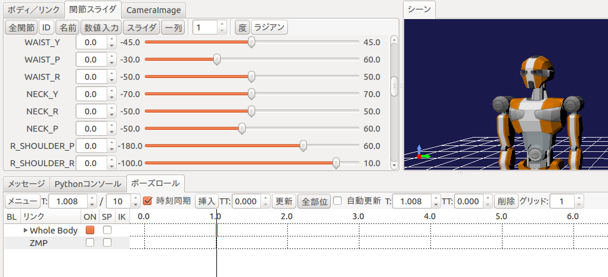
今回は首を左右に振る動作パターンを作成します。以下の手順でポーズを作成してください。
ポーズロールにおいて 2.0 を選択し、関節スライダにおいて首関節のヨー軸「NECK_Y」を 70.0 にセットし、ポーズロールの「挿入」を押す。
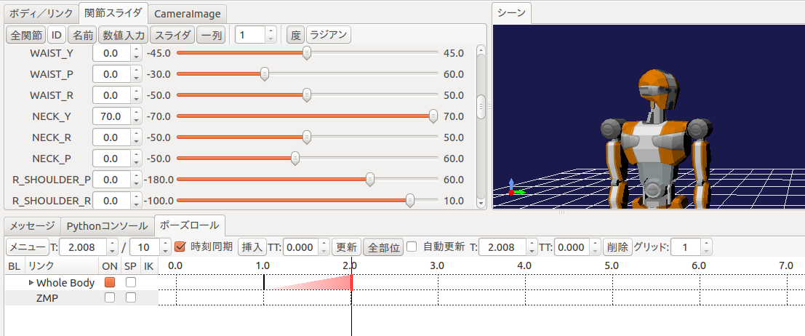ポーズロールにおいて 3.0 を選択し、関節スライダにおいて首関節のヨー軸「NECK_Y」を 0.0 にセットし、ポーズロールの「挿入」を押す。
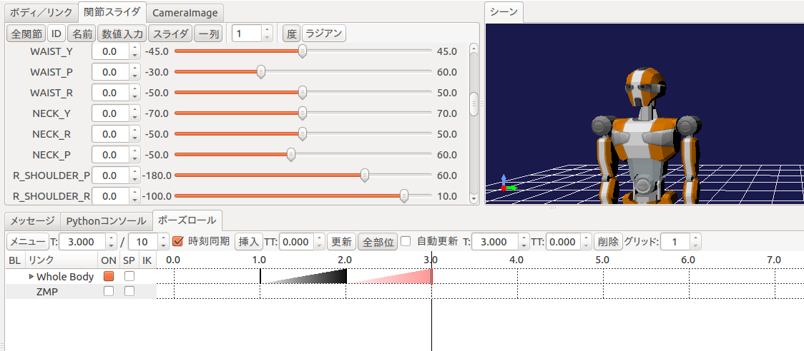ポーズロールにおいて 4.0 を選択し、関節スライダにおいて首関節のヨー軸「NECK_Y」を -70.0 にセットし、ポーズロールの「挿入」を押す。
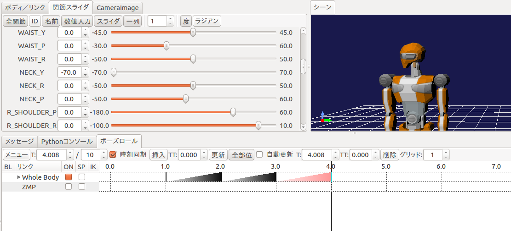ポーズロールにおいて 5.0 を選択し、関節スライダにおいて首関節のヨー軸「NECK_Y」を 0.0 にセットし、ポーズロールの「挿入」を押す。
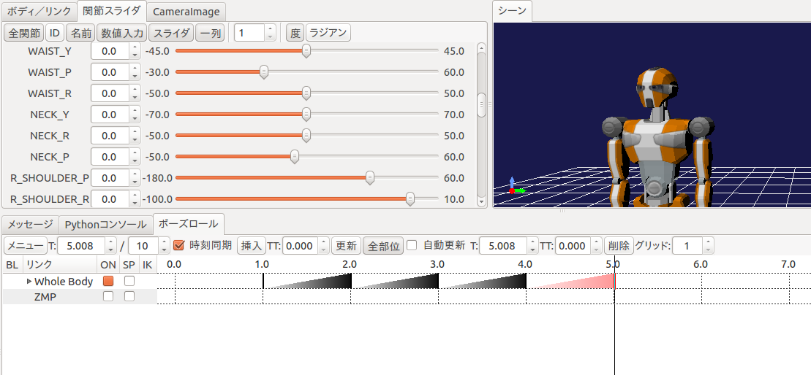ポーズロールにおいて 6.0 を選択し、関節スライダにおいて首関節のヨー軸「NECK_R」を -50.0 にセットし、ポーズロールの「挿入」を押す。
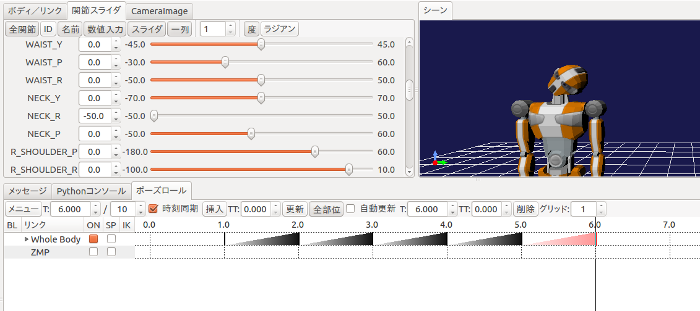
ポーズロールで作成したのはキーフレームと呼びます。これより、プログラムで使用するモーションを生成させます。 ツールバーから「ボディモーションの生成」ボタンを押します。

モーションはツールバーのボタンで手動で生成しなくても、キーフレームの更新時に自動生成することができます。 これを有効にするにはツールバーの「自動更新モード」のボタンをオンにしてください。

SampleMotion の子供に motion があるので、これを選択し名前を付けて保存ボタンを押します。

ファイル名はRobotPattern.yamlとし、コントローラが参照するChoreonoidの共有ディレクトリ、/usr/share/choreonoid-1.5/motionに置いておきます。
コントローラの設定¶
Choreonoidには1体のロボットに複数のコントローラを割り当てる機能があります。今JVRCの子アイテムとしてBodyRTCとSampleMotionの2つがありますが、これら2つのうちどちらをシミュレーション時に使用するかを指定する必要があります。ここではBodyRTCを使いますのでBodyRTCの方にチェックを入れておきます。
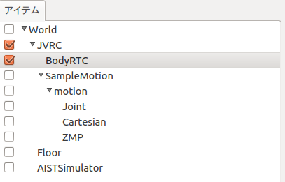シミュレーションを実行する¶
シミュレーションを実行すると今度はロボットが崩れ落ちることなく、先ほど作成した首振りのモーションを実行しているはずです。この時RTSystemEditorでRTCの接続を確認すると、下図のようになっており、フィードバックループができていることが確認できます。
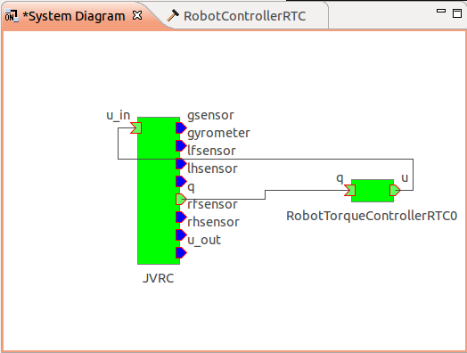注釈
別のシーンビューを生成して、同時にカメラの映像を表示してみましょう。
メインメニュー「表示」の「ビューの生成」から「シーン」を選択します。次のウィンドウが表示されるので OK をクリックします。
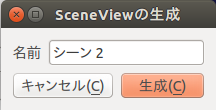新しいシーンビュー「シーン2」が生成されます。 「シーン2」タブをクリックして選択し、カメラの選択ボタンでロボットのカメラ「JVRC - rcamera」などに表示を切り替えます。
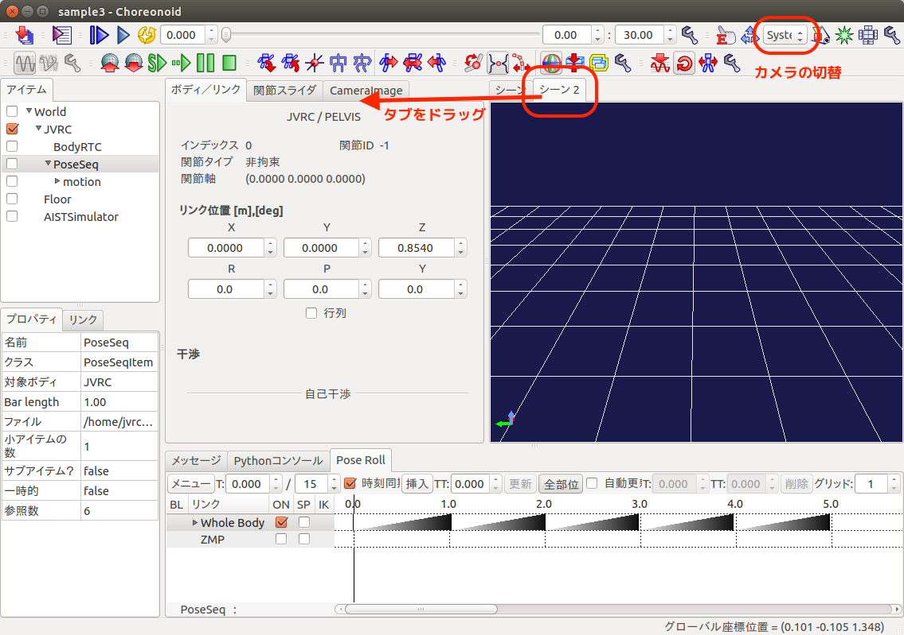「シーン2」タブをドラッグして二つのシーンを同時に表示することもできます。
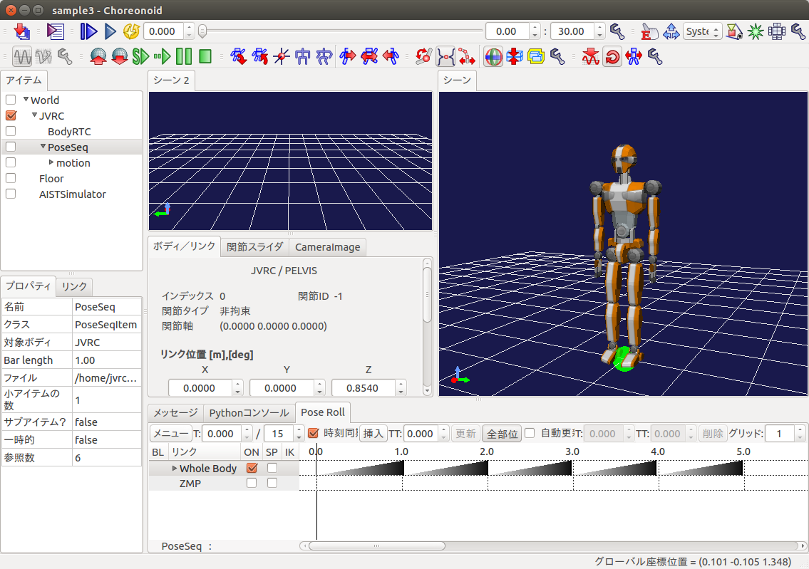サンプルファイルについて¶
このチュートリアルで作成されるプロジェクトファイルはcnoid/sample3.cnoidに、コントローラのソースコードはrtc/RobotTorqueControllerRTC.h, rtc/RobotTorqueControllerRTC.cppに収録されています。チュートリアルではRobotControllerRTCを拡張していきますが、サンプルファイルではファイル名が重複してしまうため、本チュートリアルで作成するコントローラはRobotTorqueControllerRTCという名称で収録しています。